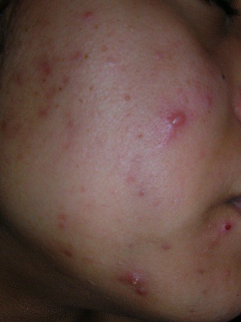
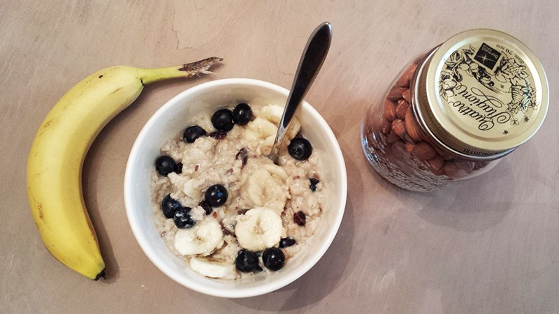
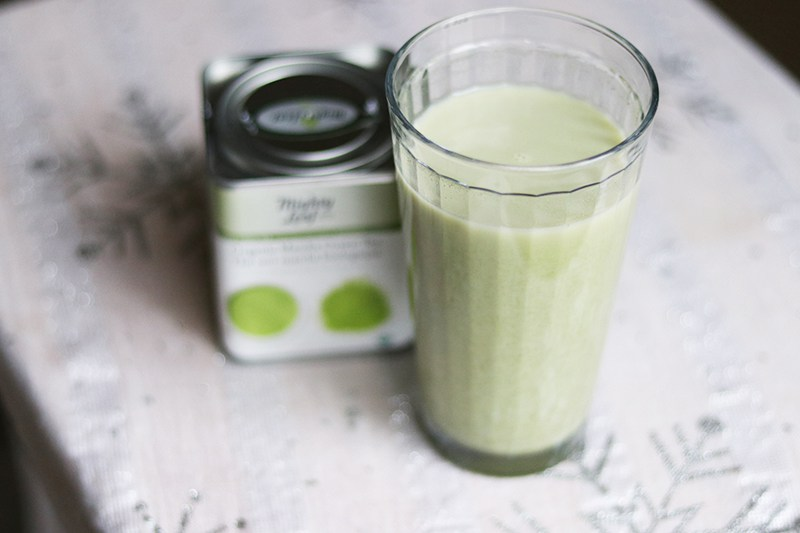

My Health & Diet Story
Introduction
It has been about a decade since I first started thoroughly exploring the connection between physical ailments and diet and about two decades since I had my first bouts of notable negative symptoms likely related to diet. It is hard to believe that it has been that long since the start of my journey toward health awareness and holistic healing began. I am happy to finally share my story with those who reach this corner of the web and hope that that my experiences bring many beneficial insights to you so you can enrich yourself and attain the wellness you seek in your own life.
Aches, Pains, Allergies & Illnesses in the Early Years
Even as far back as grade school, I remember having recurrent issues with digestion and stomach pain. I recall also having really bad allergies and needing to take Benadryl which would always knock me out. I was pretty stressed out in high school, so when my symptoms started getting increasingly more pronounced during that time span, especially during my junior and senior years, I attributed it all to chronic stress. I remember having pain and discomfort daily. I constantly had the feeling of something being stuck in my throat, my stomach would make really loud, awful sounds (it really actually sounded like it was wailing desperately for help sometimes!), I frequently had sharp and stabbing muscles pains in my upper back, and I would get sick every month like clockwork the week right before my period (which was always late by about a month every time). Even though my periods were irregular, I always knew my period was going to start because I’d be greeted with a sore throat, congestion, fever, and even vomiting sometimes. My periods were also oftentimes very painful. Even though I had a lot of symptoms in general, the only time I remember going to the doctor specifically for any symptoms was for my stomach and digestive issues. After some negative tests, he basically said my issues were mental and stress-related and there wasn’t anything wrong with me physically.
Me right before my junior year in high school at an orchestra festival with my stand partner
Physical & Neurological Symptoms in the College Years
When I went to college, I don’t recall initially having as many issues like these, although I do recall my periods getting even more painful during the beginning of my freshman year and physical problems like tremors, unilateral pain, etc. increasing during my sophomore year. Aside from these two things, I did not really notice any other glaring issues. I was a serious violinist for a large chunk of my life and even attended a music conservatory my freshman year. When I left the conservatory to study at a university the following year, I continued my studies in music performance until my physical symptoms began interfering with my ability to play. My symptoms included unilateral pain and tension, tremors/shaking, joint pain and stiffness, and acute anxiety, all of which I assumed were solely due to the stress I was dealing with in my life at the time in addition to not stretching and warming up properly for many years. That’s not to say that these factors did not contribute to the symptoms. My future experiences with these symptoms in my 30’s however would eventually shed more light on the nature of my symptoms, which I will get to in a later paragraph. These symptoms, paired with everything else, eventually resulted in me dropping out spring semester of my sophomore year. I wasn’t planning to return afterwards but ended up returning the next school year to finish out the program.
TMJ, Bruxism & Cystic Acne in my 20's
After college, around 2009, I began developing deep, painful, piercing headaches that made it hard for me to do simple exercises like jumping jacks, running, burpies, etc. It always felt like my brain was slamming against the sides of my skull after every macro movement. I remember having to just lay down in the dark just from the headache draining all of my energy and being so painful. At some point in 2008/2009, I also developed TMJ syndrome (tempomandibular joint syndrome) and started grinding my teeth in my sleep (also known as bruxism). As if that weren’t enough, I also started developing pretty pervasive cystic acne that left scars all over my face. I tried product after product to no avail. The cystic acne popped up all over my face and lasted for a couple years (2009-2011). Below are some pictures from the Acne.org gallery that I kept while trying to solve this problem. I eventually left behind topical treatments to explore internal triggers by addressing hormones and diet.
A picture of my cystic acne from back in 2011
In 2011, I finally got a prescription for birth control which ended up noticeably clearing up my skin within weeks. I’ll be honest, the birth control was the lazy way to clear skin. Deep down, I knew that if I could shape my diet appropriately, it’d be the much healthier way to potentially clear up my skin. Part of me was hoping that being on birth control for a few years would “re-balance” my hormones, and my skin would stay clear even after I stopped using the pill. However, when I tried weening myself off of birth control four years later after I started getting leg spasms and pains, my acne popped right back up. That year, 2015, I decided to really give the diet route my all.
The Pulse Test, Food Intolerances & the Elimination Diet
I discovered the concept of healing physical and skin issues via internal means in 2009 while I was working as an AmeriCorps VISTA at my home town’s health department. I was doing research on diet for the health department’s website when I came across some interesting sources. In addition to realizing there were other food pyramids out there that did not suggest “6-11 servings of bread, grain, and pasta” per day but suggested diets that emphasized meat and vegetables, I came across information about food intolerances and sensitivities for the first time. I learned about something called the pulse test which I used to find my first food culprit–my beloved oatmeal. It was a sad day when I discovered oatmeal was not my friend. After waking up and making a bowl of plain “heart healthy” oatmeal, I tested my resting pulse right before taking my first bite. Less than ten minutes after that, my resting pulse had shot up from the 70’s to over 110 b.p.m.! My next test was with plain steamed broccoli and cauliflower. My pulse remained in the 70’s after I ate that meal. I was relieved to have found my first “safe foods” for my elimination diet.
Sadly, oatmeal may not be so “heart healthy” after all.
When I finally got a salaried job in 2010, I paid for a food intolerance panel blood test. There is a lot of disagreement about whether or not these tests are legitimate or not. All I know is that at the time I wanted answers, and I wanted to cover all bases just in case. According to the test, I had sensitivities to egg whites, tomatoes (they recommended avoiding all nightshades), grapefruit, avocados, pumpkin, safflower oil, and some kind of kelp. From my understanding, there could be multiple reasons why a positive result is obtained. Regardless, I can say the following with almost complete certainty: 1) I get immediate stomach problems after eating eggplants (another nightshade), grapefruit make my lips and mouth feel numb, and I have noticed a trend over years of feeling really awful after eating eggs. I was in denial about the eggs for the longest time, but it keeps proving itself over and over again.
“Making such a big diet commitment is not just about changing what you eat. It’s a lifestyle change. And part of being able to fully stick with lifestyle changes oftentimes requires people to step back and question how they are living their lives.”
I had tried the paleo diet in 2013 while I was in graduate school, but it was pretty difficult to truly stick to on a student budget. Now that I had been working full-time as a teacher for a couple years, I had the means to start regularly eating high-quality food. I started a diet called the Autoimmune Protocol (AIP), which is even more strict than the paleo diet. I luckily worked right next to a Whole Foods, so it was easy getting high-quality groceries. I was doing well for a while until I started getting too bold. I added back eggs and started eating yogurt (including frozen yogurt) again almost daily. It all seemed harmless enough, but I’ve come to realize over time that just one food can do you in, especially if you’re eating it nearly every day. It took me a long time to come to terms with the fact that “good” foods like Greek yogurt and eggs may not be all that good for you after all. The key is listening to your body.
Between 2015 and 2018, I went on and off AIP/paleo, going back and forth with eliminating certain foods. Can I just say, I am by default really bad at objectively assessing foods’ effects on my body. It takes so much discipline, planning, care, and patience that didn’t come overnight for me. In fact, it took me years! Making such a big diet commitment is not just about changing what you eat. It’s a lifestyle change. And part of being able to fully stick with lifestyle changes oftentimes requires people to step back and question how they are living their lives.
The Big Change, Keto Disasters & Continuing to Learn
In the fall of 2017, I made a big change in my career in order to address many unaddressed mental and physical health issues and to also plunge into a field I had been wanting to pursue for a long time (web and graphic design). Doing freelance and gig work allowed me to get the flexibility I’d been needing for over a decade to straighten out the daily aspects of taking care of my mental, emotional, and physical health.
Early on, I decided to try the ketogenic diet because of the the said mental benefits. The big mistake I made was making up for no carbs by eating tons of… eggs! And nightshades! You’d think I’d have learned my lesson by now. Some lessons have to be learned the really hard way, I guess. Well, I got really sick, I had horrible headaches, had pain in my knees and joints, and I became extremely depressed and anxious. I was so wiped out that I remember having to just lay on the couch because I couldn’t get my body up to do anything. It was awful. I guess some people claim this was the “keto flu”, but I wasn’t buying it. I was almost certain that it was my diet heavy in eggs and nightshades that was wiping me out. The lack of energy from carbs like sweet potatoes and carrots probably wasn’t helping either. Needless to say, I ended my keto experiment ASAP. I’ve since come to terms with my egg intolerance and use egg substitutes such as bananas, apple cider vinegar, and paleo-friendly egg replacement for baking now. I have gotten good at keeping my nightshade intake to a minimum (e.g., the AIP BBQ sauce really helps with that!).
Only about a few weeks ago in late August 2018, I had a really bad experience where my neurological symptoms returned (unilateral right-side pain and tension, severe headache, shooting pain in my jaw, twitching feeling in the head area and behind the eyes, tremor and shaking on the right side only, shortness of breath) which was also accompanied by acute anxiety and my first experiences having what I believe was a panic attack. It was scary because it was like the neurological symptoms I experienced back in college but intensified. I am not 100% sure what the trigger was, although I do suspect that something in my decaf mocha lattes made with pure cream may have been to blame. I’ve since dropped coffee altogether and opted for an almond milk alternative (although the matcha green tea latte I made with it today gave me extremely bad anxiety and neuro-like symptoms almost immediately and kept me up all night.)
Looks good, doesn’t it? I thought so too. It was tasty. Too bad it gave me negative symtoms that lasted almost the entire day!
After coming out of that last experience in late August, I have gained a new determination, even greater than the determination I had before, to find a diet that works for me. That last experience is proof that these symptoms aren’t just the result of stressful things happening in my life. I am no longer dealing with the kind of stress I dealt with as a teacher, and I am the happiest I have ever been. But that episode popped up out of no where, with no stressful context anywhere in sight. The mystery is still what other hidden culprits there may be. I’ve got my running list of suspects as well as some guaranteed culprits like eggs, eggplants, too much matcha green tea powder, coffee, etc. As much as I’ve learned over the years, I’m still learning!
“Most importantly, I feel like myself again. I haven’t felt this way in many years. It’s hard for me to believe that I am capable of feeling like this after feeling the way I did all those years up until now.”
The great news is this. I’ve gotten to a place where I can easily whip up my tasty basic go-to’s (like spring mix with steak and balsamic olive oil dressing) and also feel comfortable trying new paleo-friendly recipes. Gregg and I have also begun embedding “cheat days” every 2-3 weeks which really makes it easier to sustain our diets.
The even better news is that:
- My face is clearer than it has ever been since I was a child.
- My headaches are infrequent visitors now, and they usually only pop up when I’ve eaten an offending food.
- My stomach no longer wails with discontent and is flat instead of round and bloated like it used to be.
- With the exception of very mild pain and tension in my lower neck and upper back, my joints and muscles feel awesome.
- I can dance, run around and do chores, run fast up hills with the dogs without pain, work on multiple projects for hours, etc., because I have so much more energy and very minimal pain!
- I have almost zero right-side pain, tension, tremors, shakes, etc.!
- My thinking is quick and clear, and I can work through problems and projects much more easily.
- I feel happy, motivated, and not depressed.
- I can go out in public and not feel any anxiety!
- …and I can still have high-quality ice cream once in a while, although not too much. 🙂
Most importantly, I feel like myself again. I haven’t felt this way in many years. It’s hard for me to believe that I am capable of feeling like this after feeling the way I did all those years up until now.
I hope that me sharing my experiences has shed some light on your own personal health experiences and journey to wellness. Do you have any experience with seemingly unexplainable health issues and/or diet? I’d love to hear from you! It’s been a long journey for me and I’ve still got a long way to go. I am excited to share what I know with others to help the best I can!